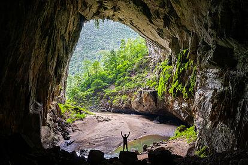

🕯️ CUEVA OSCURA
Decides entrar directamente a la cripta. El pasillo es angosto y el aire se vuelve frío inmediatamente. Tu linterna apenas ilumina las paredes cubiertas de jeroglíficos mayas que narran la historia de un rey sacrificado y su tesoro maldito.
Llegas a una cámara más amplia. Al fondo ves un resplandor dorado que emana de un cofre abierto. Pero también escuchas un aleteo: miles de murciélagos cuelgan del techo, perturbados por tu presencia.
Una inscripción advierte: "El oro del rey despierta a los guardianes alados."
